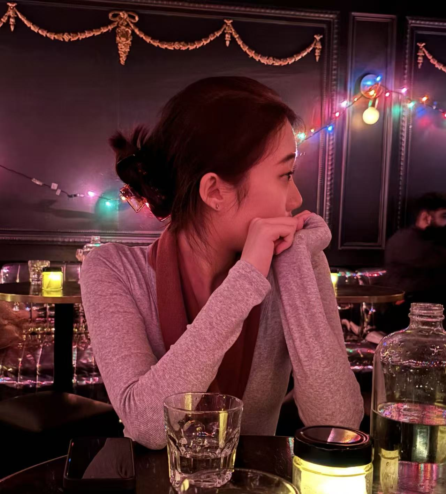
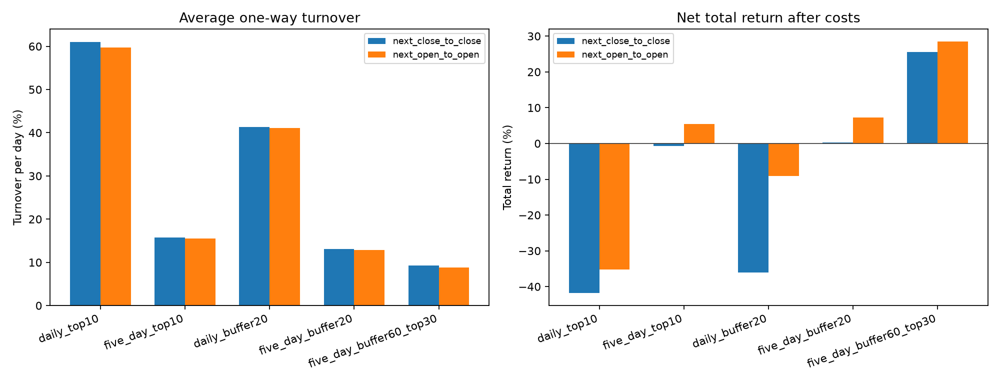
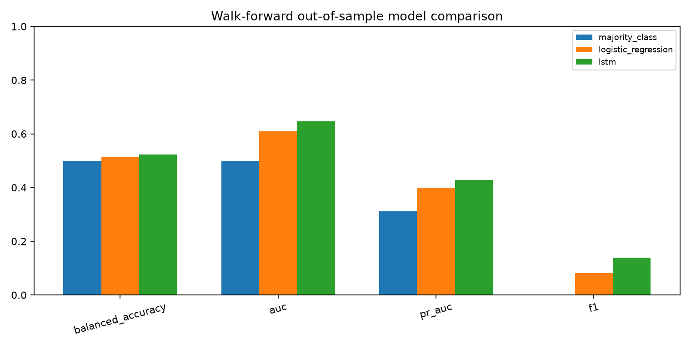

Quantitative Modeling
量化建模
Machine learning, time series, regression, and cross-validation for robust, interpretable analysis.
运用机器学习、时间序列、回归和交叉验证，完成稳健且可解释的分析。
Statistics · Finance · Data 统计 · 金融 · 数据
Statistics graduate and HKU Master of Statistics student building data-driven solutions for financial risk and quantitative analysis.
QUANTITATIVE FINANCE · RISK ANALYTICS · STATISTICAL MODELING
统计学本科毕业，现就读于香港大学统计学硕士，以数据驱动的方法解决金融风险与量化分析问题。
量化金融 · 风险分析 · 统计建模
My background spans statistics, mathematics, capital markets, and data analytics. I translate uncertainty into practical models, risk insights, and clear business recommendations.
我的背景横跨统计、数学、资本市场与数据分析，擅长将不确定性转化为可执行的模型、风险洞察和业务建议。
Machine learning, time series, regression, and cross-validation for robust, interpretable analysis.
运用机器学习、时间序列、回归和交叉验证，完成稳健且可解释的分析。
Credit assessment, financial modeling, and policy research grounded in capital-market experience.
结合资本市场实践，开展信用评估、财务建模和政策研究。
Clear dashboards, automated reports, and stakeholder-ready stories built from complex datasets.
将复杂数据转化为清晰的仪表盘、自动化报告和面向业务的叙事。

I bring the same curiosity to technical work, teaching, and collaboration: Make bold hypotheses and verify them cautiously, and communicate the result with clarity.
无论是技术工作、教学还是团队协作，我都保持同样的好奇心：大胆假设，谨慎求证，并清晰传达结果。
Formal training in applied statistics and mathematics, now advancing toward risk statistics and financial statistics at HKU.
以应用统计与数学为基础，现于香港大学进一步学习风险统计和金融统计。
Current student · Focus on risk statistics, financial statistics, and statistical modeling.
在读 · 聚焦风险统计、金融统计与统计建模。
Coursework included probability, regression, time series, stochastic processes, Bayesian and multivariate statistics, Hidden Markov models, differential equations, dynamic chaos theory, and nonlinear dynamics.
课程涵盖概率论、回归分析、时间序列、随机过程、贝叶斯与多元统计、隐形马可夫模型、微分方程、动力学混沌理论和非线性动力学。
Hands-on work in quantitative strategy research, backtesting, minute-level forecasting using LSTM, bond issuance, credit analysis, and data analytics.
实践覆盖量化策略研究、历史回测、长短期记忆网络模型分钟级预测、债券发行、信用分析与数据分析。
Selected work demonstrating modeling, interpretation, industry research, and decision-ready communication.
精选项目展示建模、解释、行业研究和面向决策的沟通能力。
Built an end-to-end pipeline across 302 trading days and 300 stocks: tick-to-minute and daily data processing, seven-factor evaluation, t+1 execution, fees, slippage and market impact, turnover control, and a PyTorch 3-fold walk-forward LSTM.
围绕 302 个交易日和 300 只股票搭建端到端流程，覆盖逐笔数据清洗与分钟及日频聚合、七因子评价、t+1 执行、手续费与滑点冲击、换手控制，以及 PyTorch 3-fold walk-forward LSTM。


Built a Random Forest ensemble after high-dimensional EDA, log transformation, standardization, and cross-validated Bagging and LASSO feature selection.
完成高维探索分析、对数变换和标准化，并通过交叉验证结合 Bagging、LASSO 特征选择与随机森林集成建模。
Evaluated company operations, financial performance, economic trends, consumer behaviour, and marketing strategy, culminating in a client-facing case presentation.
从运营、财务表现、经济趋势、消费者行为和市场策略分析北美公司，并完成面向客户的案例展示。
Tools are grouped by how I use them—from data preparation and modeling to risk analysis and stakeholder communication.
技能按实际用途分组，覆盖数据准备、建模、风险分析和业务沟通。
Open to opportunities and conversations in quantitative finance, risk analytics, data analytics, financial analysis, and business intelligence.
期待量化金融、风险分析、数据分析、金融分析与商业智能方向的机会与交流。